| Tên đề tài | Hệ thống thi trắc nghiệm trực tuyến — OEX (Online Examination System) |
| Môn học | Phát triển phần mềm hướng dịch vụ |
| Giảng viên hướng dẫn | Huỳnh Trung Trụ |
| Sinh viên thực hiện | Hồ Tiến Huy |
| Mã sinh viên | K23DTCN138 |
| Lớp | DTCXN02-K |
| Thời gian | Học kỳ 7 — Năm học 2024–2025 |
Em xin chân thành cảm ơn thầy Huỳnh Trung Trụ đã tận tình hướng dẫn, góp ý trong suốt quá trình học tập và hoàn thành môn Phát triển phần mềm hướng dịch vụ. Em cũng xin cảm ơn nhà trường và bạn bè trong lớp đã hỗ trợ trao đổi ý tưởng và kiểm thử sản phẩm.
Em Hồ Tiến Huy, mã sinh viên K23DTCN138, cam đoan báo cáo này là kết quả quá trình học tập và triển khai dự án dưới sự hướng dẫn của giảng viên. Các nội dung trình bày là trung thực; phần mã nguồn và tài liệu tham khảo đã được ghi rõ nguồn gốc.
Hồ Tiến Huy
OEX (Online Examination System) là hệ thống web hỗ trợ tổ chức thi trắc nghiệm trực tuyến, phục vụ ba vai trò Admin, Teacher và Student. Giáo viên quản lý môn học, ngân hàng câu hỏi MCQ một đáp án đúng, tạo đề thi, gán đề và xem kết quả. Học sinh làm bài online với đồng hồ đếm ngược, nộp bài thủ công hoặc tự động khi hết giờ; hệ thống chấm điểm ngay sau khi nộp.
Kiến trúc Client–Server ba tầng: Vue.js 3 (SPA), Node.js + Express (REST API), PostgreSQL (Prisma ORM). Xác thực JWT; tài liệu API OpenAPI 3. Phiên bản v1 hoàn thiện với 81 bài kiểm thử API tự động, luồng E2E smoke, giao diện tiếng Anh.
Từ khóa: thi trắc nghiệm, REST API, Vue.js, Node.js, PostgreSQL, JWT, chấm điểm tự động.
| STT | Giai đoạn / Công việc | Mô tả chi tiết | Người thực hiện | Thời gian | Kết quả / Sản phẩm |
|---|---|---|---|---|---|
| 1 | Khảo sát & phân tích yêu cầu | Nghiên cứu bài toán thi trực tuyến; xác định actor, phạm vi v1 | Hồ Tiến Huy | Tuần 1–2 | docs/basic_requirement.md, docs/OEX_DetailedDesign_V2.md |
| 2 | Thiết kế CSDL & API | ERD, Prisma schema, đặc tả REST, OpenAPI | Hồ Tiến Huy | Tuần 2–3 | schema.prisma, docs/api/openapi.yaml |
| 3 | Triển khai Backend | Auth, CRUD user/subject/question/exam, attempt, grading | Hồ Tiến Huy | Tuần 3–6 | backend/src/, 81 API tests |
| 4 | Triển khai Frontend | Login, dashboard, teacher/student/admin UI, exam taking | Hồ Tiến Huy | Tuần 5–8 | frontend/src/, 18 views |
| 5 | Kiểm thử & tích hợp | Unit/integration test, E2E smoke, manual checklist | Hồ Tiến Huy | Tuần 7–9 | backend/tests/, docs/MANUAL_TEST_CHECKLIST.md |
| 6 | Triển khai & tài liệu | Docker, seed, deploy guide, báo cáo | Hồ Tiến Huy | Tuần 9–10 | docker-compose.yml, docs/DEPLOY.md, báo cáo này |
Giáo dục chuyển đổi số đặt ra nhu cầu tổ chức kiểm tra trực tuyến: giảm chi phí in ấn, chấm bài thủ công, khó kiểm soát thời gian làm bài. Nền tảng thương mại thường phức tạp hoặc không phù hợp quy mô lớp (~100–500 người).
Đề tài được chọn để:
| STT | Mục tiêu | Đối tượng | Mô tả |
|---|---|---|---|
| M1 | Quản lý người dùng | Admin | CRUD user, phân role, vô hiệu hóa tài khoản |
| M2 | Ngân hàng câu hỏi | Teacher | MCQ một đáp án đúng, gắn môn/độ khó/điểm |
| M3 | Quản lý đề thi | Teacher | Tạo đề, chọn câu, cấu hình thời gian, publish |
| M4 | Gán đề | Teacher | Gán trực tiếp học sinh |
| M5 | Làm bài online | Student | Timer, navigator, auto-save, submit |
| M6 | Chấm tự động | Hệ thống | Tính điểm ngay khi nộp / hết giờ |
| M7 | Xem kết quả | Teacher, Student | Điểm tổng và chi tiết (theo cấu hình) |
| M8 | REST API + DB | Dev/Ops | PostgreSQL, OpenAPI, JWT |
Trong phạm vi: Auth JWT, quản lý user (Admin), CRUD môn/câu/đề (Teacher), gán đề, làm bài, chấm điểm, xem kết quả, MCQ một đáp án, UI tiếng Anh.
Ngoài phạm vi: Import Excel, chống gian lận, module lớp học, câu hỏi hình ảnh/đa đáp án, xáo trộn câu.
| Hạng mục | Công nghệ | Phiên bản | Vai trò |
|---|---|---|---|
| Runtime | Node.js | 20 LTS+ | Chạy server JavaScript/TypeScript |
| Ngôn ngữ | TypeScript | ^5.8.3 | Type-safe, refactor an toàn |
| Web framework | Express | ^5.1.0 | HTTP routing, middleware pipeline |
| ORM | Prisma | ^6.9.0 | Schema, migration, query type-safe |
| DB driver | @prisma/client | ^6.9.0 | Kết nối PostgreSQL |
| Database | PostgreSQL | 15+ (Docker) | Lưu trữ quan hệ |
| Auth | jsonwebtoken | ^9.0.2 | JWT access token |
| Password | bcrypt | ^6.0.0 | Hash mật khẩu (cost factor) |
| Validation | Zod | ^3.25.67 | Validate request body/query |
| CORS | cors | ^2.8.5 | Cho phép frontend origin |
| Dev runner | tsx | ^4.20.3 | Hot reload TypeScript |
| Test framework | Vitest | ^3.2.4 | Unit + integration test |
| HTTP test | Supertest | ^7.1.1 | Gọi API trong test |
| Env loader | dotenv-cli | ^8.0.0 | Tách .env / .env.test |
| Hạng mục | Công nghệ | Phiên bản | Vai trò |
|---|---|---|---|
| Framework | Vue.js | ^3.5.17 | Composition API, reactivity |
| Build tool | Vite | ^7.0.0 | Dev server, HMR, production bundle |
| Plugin | @vitejs/plugin-vue | ^6.0.0 | Compile SFC .vue |
| Ngôn ngữ | TypeScript | ~5.8.3 | Type cho component, API DTO |
| Type check | vue-tsc | ^2.2.10 | Kiểm tra type trước build |
| State | Pinia | ^3.0.3 | Auth store, session user |
| HTTP client | Axios | ^1.10.0 | Gọi REST, interceptors JWT/401 |
| Routing | Vue Router | ^4.5.1 | SPA routes, navigation guard |
| Styling | Custom CSS | — | Design tokens main.css (không dùng UI lib ngoài) |
| Hạng mục | Công nghệ | Ghi chú |
|---|---|---|
| Container DB | Docker Compose | docker-compose.yml — PostgreSQL local |
| Version control | Git | Quản lý mã nguồn |
| IDE | Cursor / Visual Studio Code | Phát triển, debug, terminal tích hợp |
| API docs | OpenAPI 3.0.3 | docs/api/openapi.yaml |
| Thiết kế | Markdown (V2) | docs/OEX_DetailedDesign_V2.md |
| OS dev | Windows 10/11 | Môi trường phát triển chính |
| Biến | Tầng | Mô tả |
|---|---|---|
DATABASE_URL |
Backend | Connection string PostgreSQL |
JWT_SECRET |
Backend | Khóa ký JWT |
JWT_EXPIRES_IN |
Backend | Thời hạn token (vd. 1h) |
PORT |
Backend | Cổng API (mặc định 3000) |
CORS_ORIGIN |
Backend | Origin frontend (http://localhost:5001) |
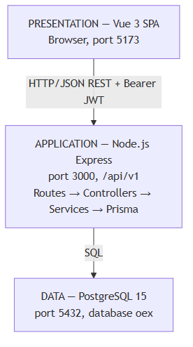
| Layer | Thư mục | Trách nhiệm |
|---|---|---|
| Model | prisma/schema.prisma |
Entity, quan hệ, enum |
| View | JSON response | { success, data } hoặc { success, error } |
| Controller | controllers/*.ts |
Parse request, gọi service, HTTP status |
| Service | services/*.ts |
Business rules, transaction, grading |
| Middleware | middleware/auth.ts |
JWT verify, requireRole() |
| Layer | Thư mục | Trách nhiệm |
|---|---|---|
| View | views/*.vue, components/ |
Template, hiển thị, sự kiện UI |
| ViewModel | <script setup> + Pinia |
State, computed, gọi API |
| Model (client) | types/*.ts, api/*.ts |
DTO mirror backend, HTTP client |
| Tiêu chí | Monolith (OEX v1) | Microservices |
|---|---|---|
| Quy mô | ~100–500 users | >10k users, team lớn |
| Triển khai | 1 container API + 1 DB | Nhiều service, service mesh |
| Debug | Đơn giản | Phức tạp (distributed trace) |
| Phù hợp PMHDV | ✓ | Quá mức cho đề tài |
Hướng tách Auth Service, Exam Service, Grading Service khi scale (mục 6.2).
| Module | ID | Yêu cầu | API liên quan |
|---|---|---|---|
| AUTH | AUTH-01–06 | Login, JWT, change password, chặn user inactive | /auth/* |
| USR | USR-01–05 | CRUD user, filter role, deactivate | /users/* |
| SUB | SUB-01–04 | CRUD subject (owner teacher) | /subjects/* |
| QST | QST-01–06 | CRUD MCQ, validate 1 đáp án đúng | /questions/* |
| EXM | EXM-01–08 | CRUD exam, set questions, publish, assign | /exams/* |
| ATT | ATT-01–09 | Start/save/submit attempt, expire, grade | /attempts/*, /my-exams |
| RES | RES-01–05 | Tính điểm, result, teacher view attempts | /attempts/:id/result, /exams/:id/results |
Quy tắc nghiệp vụ backend quan trọng:
createdBy / teacherId của mình.studentId.isCorrect không trả về trong attempt IN_PROGRESS.$transaction.| Module | ID | Màn hình / Component | Hành vi UI |
|---|---|---|---|
| AUTH-FE | FE-AUTH-01 | LoginView |
Form login, hiển thị lỗi INVALID_CREDENTIALS |
| AUTH-FE | FE-AUTH-02 | AccountView |
Đổi mật khẩu |
| AUTH-FE | FE-AUTH-03 | Router guard | Redirect /login nếu chưa auth |
| USR-FE | FE-USR-01 | UserListView |
Bảng user, modal tạo/sửa (Admin) |
| SUB-FE | FE-SUB-01 | SubjectListView |
CRUD môn học |
| QST-FE | FE-QST-01 | QuestionBankView, QuestionFormView |
Danh sách + form nhiều option |
| EXM-FE | FE-EXM-01 | ExamListView, ExamNewView, ExamDetailView |
Tabs: settings, questions, assign |
| EXM-FE | FE-EXM-02 | ExamResultsView, TeacherAttemptDetailView |
Kết quả lớp + chi tiết |
| ATT-FE | FE-ATT-01 | MyExamsView |
Danh sách đề, nút Start/Resume |
| ATT-FE | FE-ATT-02 | TakeExamView |
Timer, progress bar, navigator, modal submit |
| ATT-FE | FE-ATT-03 | Auto-save | Debounce 500ms → PUT /answers |
| RES-FE | FE-RES-01 | ResultView |
Điểm + review (nếu server cho phép) |
| COM-FE | FE-COM-01 | LoadingState, ErrorState, EmptyState |
Mọi view fetch data |
| COM-FE | FE-COM-02 | AppLayout, AppNav |
Shell, nav theo role |
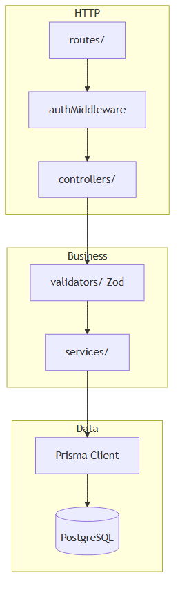
Phân lớp backend:
| File / nhóm | Ví dụ |
|---|---|
routes/authRoutes.ts |
POST /login, GET /me |
routes/examRoutes.ts |
CRUD exam, assign, results |
routes/attemptRoutes.ts |
start, save, submit |
services/attemptService.ts |
gradeAttemptInTx, startAttempt |
services/examService.ts |
publish, assign students |
middleware/auth.ts |
requireRole(ADMIN|TEACHER|STUDENT) |
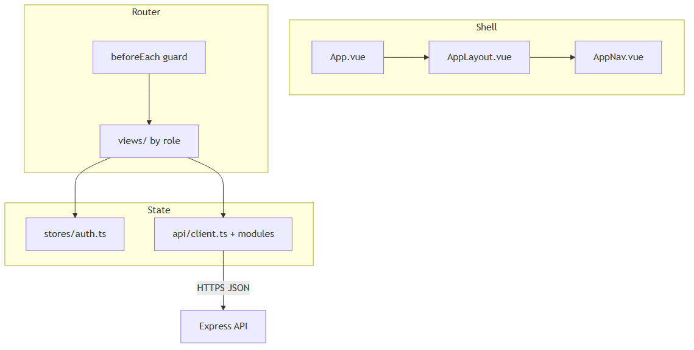
Ánh xạ route ↔ role:
| Route | View | Role |
|---|---|---|
/login |
LoginView | Public |
/ |
DashboardView | All |
/admin/users |
UserListView | ADMIN |
/subjects, /questions/*, /exams/* |
Teacher views | TEACHER |
/my-exams, /take/:id, /results/:id |
Student views | STUDENT |
/account |
AccountView | All |
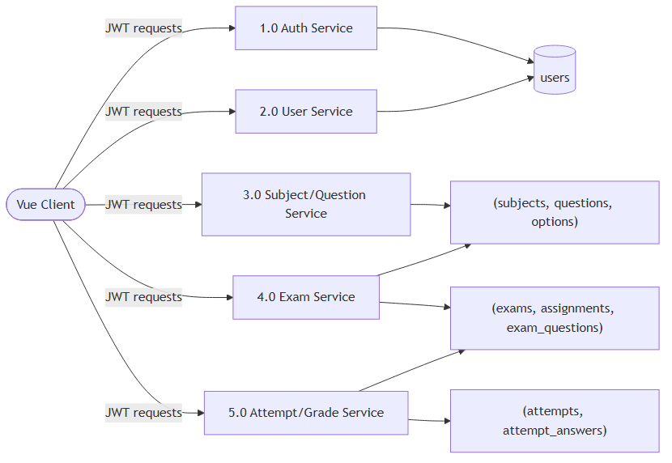
Luồng dữ liệu nộp bài (backend):
POST /attempts/:id/submit + JWT student.gradeAttemptInTx: so sánh selectedOptionId với option isCorrect.score, status=SUBMITTED, is_correct từng câu.AttemptResult (+ review nếu showAnswersAfterSubmit).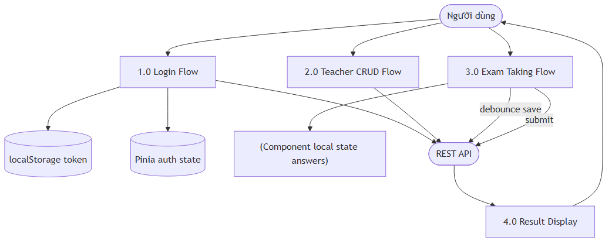
Luồng làm bài phía client:
| Bước | Process | Dữ liệu |
|---|---|---|
| 1 | MyExamsView load | GET /my-exams → danh sách assignment |
| 2 | Start | POST /attempts/start → attemptId, questions |
| 3 | TakeExamView | answers: Record<questionId, optionId> local |
| 4 | On change | PUT /attempts/:id/answers (500ms debounce) |
| 5 | Timer = 0 hoặc Submit | POST /attempts/:id/submit → navigate Result |
| UC | Tên | Actor | Endpoint chính |
|---|---|---|---|
| UC-B01 | Xác thực | All | POST /auth/login |
| UC-B02 | Quản lý user | Admin | /users CRUD |
| UC-B03 | Quản lý môn/câu | Teacher | /subjects, /questions |
| UC-B04 | Quản lý đề | Teacher | /exams |
| UC-B05 | Gán đề | Teacher | POST /exams/:id/assignments |
| UC-B06 | Bắt đầu attempt | Student | POST /attempts/start |
| UC-B07 | Lưu đáp án | Student | PUT /attempts/:id/answers |
| UC-B08 | Nộp & chấm | Student/System | POST /attempts/:id/submit |
| UC-B09 | Xem kết quả | Teacher/Student | GET .../result, GET .../results |
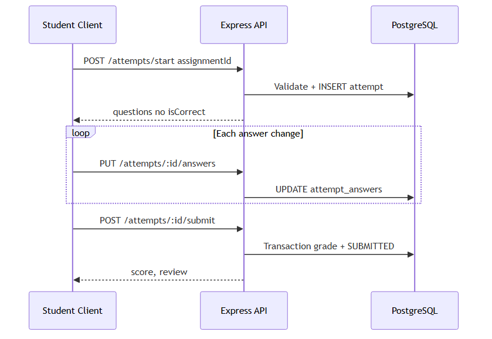
| UC | Tên | Actor | Màn hình |
|---|---|---|---|
| UC-F01 | Đăng nhập | All | LoginView |
| UC-F02 | Xem dashboard | All | DashboardView |
| UC-F03 | Quản lý user | Admin | UserListView |
| UC-F04 | Soạn ngân hàng đề | Teacher | SubjectList, QuestionBank, QuestionForm |
| UC-F05 | Tạo & publish đề | Teacher | ExamNew, ExamDetail |
| UC-F06 | Gán học sinh | Teacher | ExamDetail (tab Assign) |
| UC-F07 | Xem đề được gán | Student | MyExamsView |
| UC-F08 | Làm bài | Student | TakeExamView |
| UC-F09 | Xem điểm | Student | ResultView |
| UC-F10 | Xem kết quả lớp | Teacher | ExamResultsView |
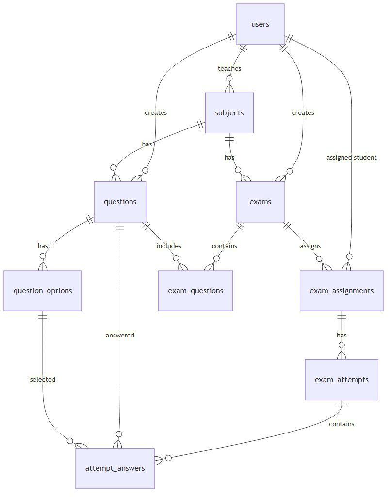
| Bảng | Cột chính | Ràng buộc |
|---|---|---|
users |
id, email, password_hash, full_name, role, is_active | email UNIQUE |
subjects |
id, code, name, teacher_id | UNIQUE(teacher_id, code) |
questions |
id, subject_id, content, difficulty, points | FK subject |
question_options |
id, question_id, label, content, is_correct | 1 correct/question |
exams |
id, subject_id, title, duration_minutes, open_at, close_at, status, max_attempts, show_answers_after_submit | status enum |
exam_questions |
exam_id, question_id, order_index | PK composite |
exam_assignments |
id, exam_id, student_id, assigned_by | UNIQUE(exam, student) |
exam_attempts |
id, assignment_id, started_at, expires_at, submitted_at, score, max_score, status | status enum |
attempt_answers |
id, attempt_id, question_id, selected_option_id, is_correct | UNIQUE(attempt, question) |
Nguồn: backend/prisma/schema.prisma.
Frontend không có database riêng; quản lý state qua Pinia + bộ nhớ component:
| Store / Type | File | Dữ liệu |
|---|---|---|
AuthUser |
types/api.ts |
id, email, fullName, role |
useAuthStore |
stores/auth.ts |
user, token, login/logout/initialize |
InProgressAttempt |
types/student.ts |
attemptId, questions, expiresAt |
DashboardStats |
types/dashboard.ts |
Theo role: counts, upcoming exams |
Local answers |
TakeExamView.vue |
Record<questionId, optionId> khi làm bài |
DTO frontend mirror API — đảm bảo field khớp OpenAPI (camelCase JSON).
Base URL: http://localhost:5002/api/v1
Envelope thành công: { "success": true, "data": ... }
Envelope lỗi: { "success": false, "error": { "code", "message" } }
Auth: Authorization: Bearer <token> (trừ login).
| Method | Path | Role | Input | Output (data) |
|---|---|---|---|---|
| POST | /auth/login |
Public | { email, password } |
{ accessToken, expiresIn, user } |
| GET | /auth/me |
Any | — | User |
| POST | /auth/change-password |
Any | { currentPassword, newPassword } |
{ message } |
| Method | Path | Input | Output |
|---|---|---|---|
| GET | /users?role=&search= |
Query filter | User[] |
| POST | /users |
{ email, password, fullName, role } |
User |
| GET | /users/:id |
Path id | User |
| PUT | /users/:id |
{ email?, fullName?, role? } |
User |
| PATCH | /users/:id/status |
{ isActive: boolean } |
User |
| Method | Path | Input | Output |
|---|---|---|---|
| GET | /subjects |
— | Subject[] |
| POST | /subjects |
{ code, name, description? } |
Subject |
| GET | /subjects/:id |
— | Subject |
| PUT | /subjects/:id |
{ code?, name?, description? } |
Subject |
| DELETE | /subjects/:id |
— | { message } |
| Method | Path | Input | Output |
|---|---|---|---|
| GET | /questions?subjectId=&difficulty=&search= |
Query | Question[] (có isCorrect) |
| POST | /questions |
{ subjectId, content, difficulty, points, options[] } |
Question |
| GET | /questions/:id |
— | Question |
| PUT | /questions/:id |
Cập nhật tương tự create | Question |
| DELETE | /questions/:id |
— | { message } |
options: [{ label, content, isCorrect }] — đúng một isCorrect: true.
| Method | Path | Input | Output |
|---|---|---|---|
| GET | /exams |
— | Exam[] |
| POST | /exams |
{ subjectId, title, description?, durationMinutes, openAt, closeAt, maxAttempts?, showAnswersAfterSubmit? } |
Exam |
| GET | /exams/:id |
— | Exam + questions |
| PUT | /exams/:id |
Cập nhật metadata | Exam |
| DELETE | /exams/:id |
— | { message } |
| PUT | /exams/:id/questions |
{ questionIds: uuid[] } |
Exam với ordered questions |
| PATCH | /exams/:id/status |
{ status: DRAFT|PUBLISHED|CLOSED } |
Exam |
| POST | /exams/:id/assignments |
{ studentIds: uuid[] } |
Assignments created |
| GET | /exams/:id/assignments |
— | Assignment list |
| DELETE | /exams/:id/assignments/:assignmentId |
— | { message } |
| GET | /exams/:id/results |
— | Danh sách attempt/score theo học sinh |
| GET | /exams/:id/attempts/:attemptId |
— | Chi tiết attempt (teacher) |
| Method | Path | Input | Output |
|---|---|---|---|
| GET | /students?search= |
Query | User[] (role STUDENT) |
| Method | Path | Role | Input | Output |
|---|---|---|---|---|
| GET | /my-exams |
Student | — | MyExamAssignment[] |
| POST | /attempts/start |
Student | { assignmentId } |
InProgressAttempt |
| GET | /attempts/:id |
Student | — | Attempt in progress |
| PUT | /attempts/:id/answers |
Student | { answers: [{ questionId, selectedOptionId }] } |
Updated attempt |
| POST | /attempts/:id/submit |
Student | — | AttemptResult (score, review?) |
| GET | /attempts/:id/result |
Student | — | AttemptResult |
Mã lỗi nghiệp vụ thường gặp:
| Code | HTTP | Ý nghĩa |
|---|---|---|
| INVALID_CREDENTIALS | 401 | Sai email/password |
| ACCOUNT_INACTIVE | 401 | Tài khoản bị khóa |
| FORBIDDEN | 403 | Sai role / không sở hữu resource |
| NOT_FOUND | 404 | Không tìm thấy |
| EXAM_NOT_AVAILABLE | 400 | Chưa publish / ngoài khung giờ |
| MAX_ATTEMPTS_REACHED | 400 | Hết lượt làm |
| ATTEMPT_IN_PROGRESS | 409 | Đang có bài chưa nộp |
| ATTEMPT_EXPIRED | 400 | Hết giờ làm bài |
| VALIDATION_ERROR | 400 | Dữ liệu không hợp lệ |
Tài liệu đầy đủ: docs/api/openapi.yaml.
Ảnh chụp từ môi trường chạy thực tế (http://localhost:5001, backend http://localhost:5002/api/v1, dữ liệu seed). Tái tạo: cd docs/scripts && npm install && npx playwright install chromium && npm run capture-screenshots (yêu cầu FE + BE đang chạy).
| STT | Màn hình | Route | Role | File ảnh |
|---|---|---|---|---|
| 1 | Đăng nhập | /login |
Public | 01-login.png |
| 2 | Dashboard | / |
Teacher | 02-dashboard-teacher.png |
| 3 | Subjects | /subjects |
Teacher | 03-subjects.png |
| 4 | Question Bank | /subjects/:id/questions |
Teacher | 04-question-bank.png |
| 5 | Question Form | /questions/:id/edit |
Teacher | 05-question-form.png |
| 6 | Exam List | /exams |
Teacher | 06-exam-list.png |
| 7 | Exam Detail | /exams/:id |
Teacher | 07-exam-detail.png |
| 8 | Exam Results | /exams/:id/results |
Teacher | 08-exam-results.png |
| 9 | Dashboard | / |
Admin | 09-dashboard-admin.png |
| 10 | User Management | /admin/users |
Admin | 10-user-management.png |
| 11 | My Exams | /my-exams |
Student | 11-my-exams.png |
| 12 | Take Exam | /take/:attemptId |
Student | 12-take-exam.png |
| 13 | Result | /results/:attemptId |
Student | 13-result.png |
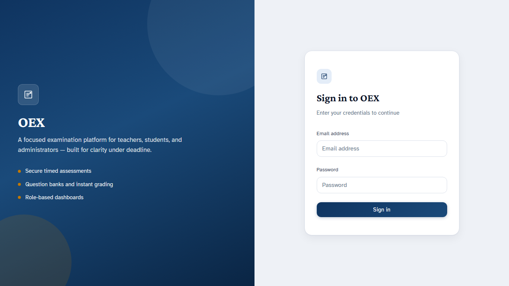
Split layout: panel thương hiệu bên trái, form email/password bên phải.
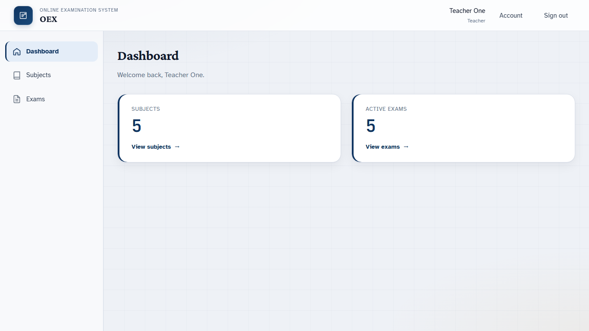
Thống kê số môn học và đề thi đang active; điều hướng Subjects / Exams.
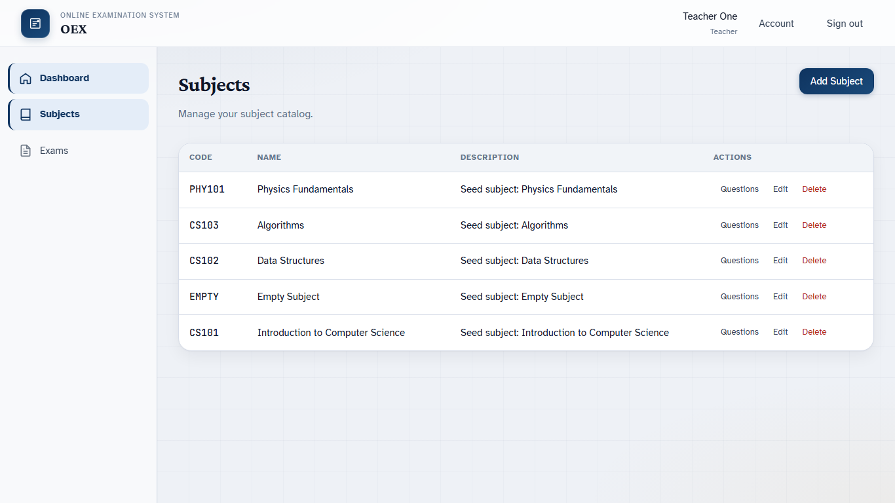
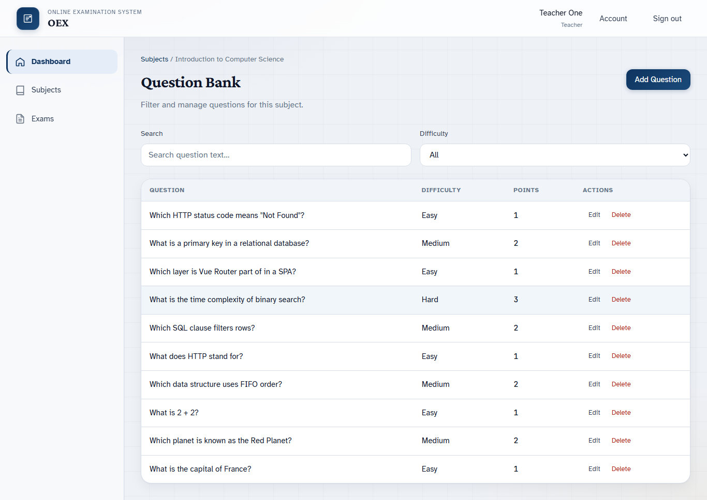
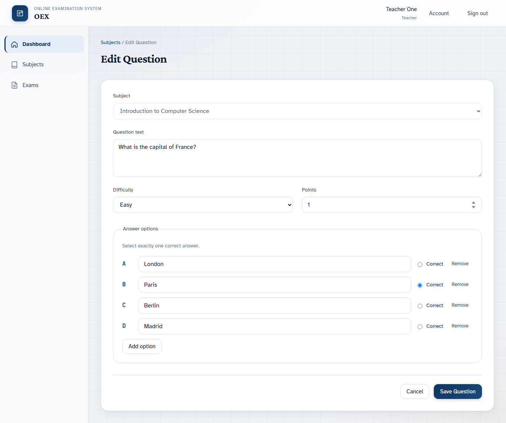
Nhập nội dung câu, độ khó, điểm và các phương án A/B/C/D với một đáp án đúng.
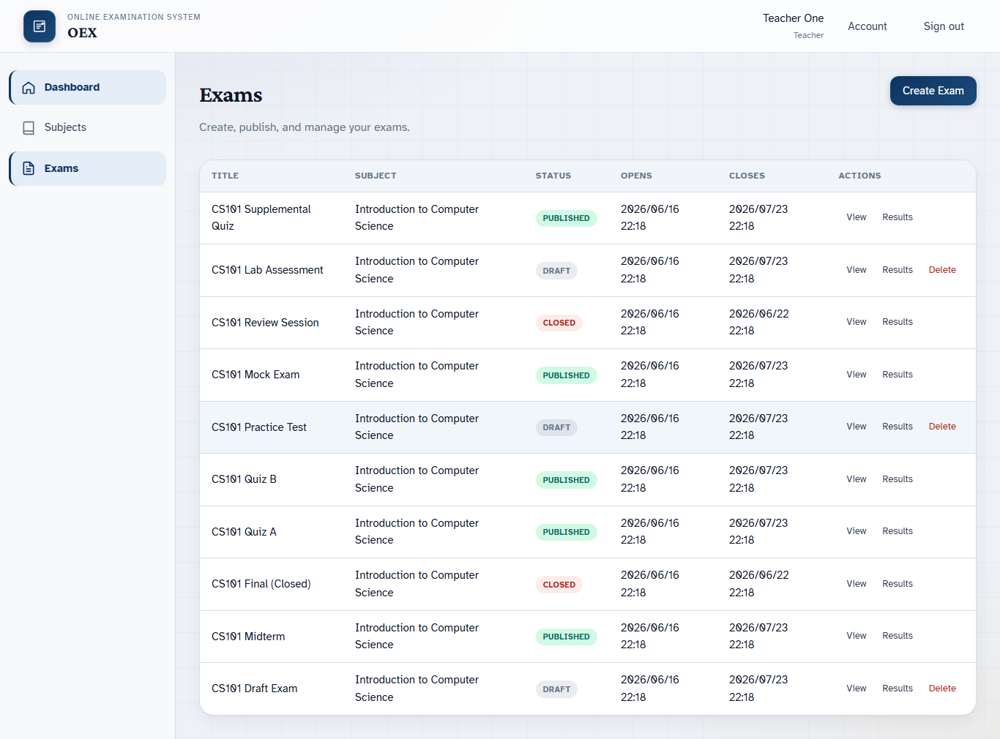
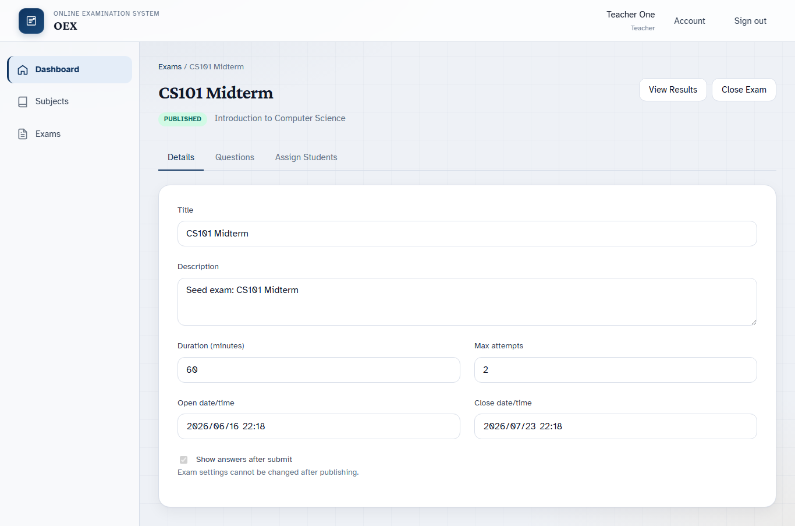
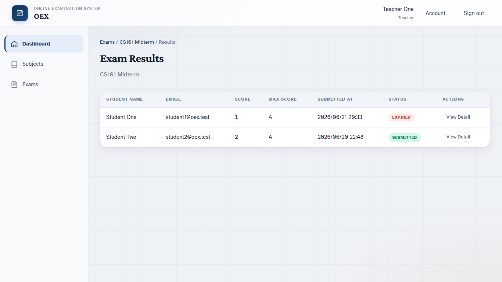
Badge trạng thái Draft/Published/Closed; tab cấu hình, chọn câu, gán học sinh; bảng điểm và View Detail.
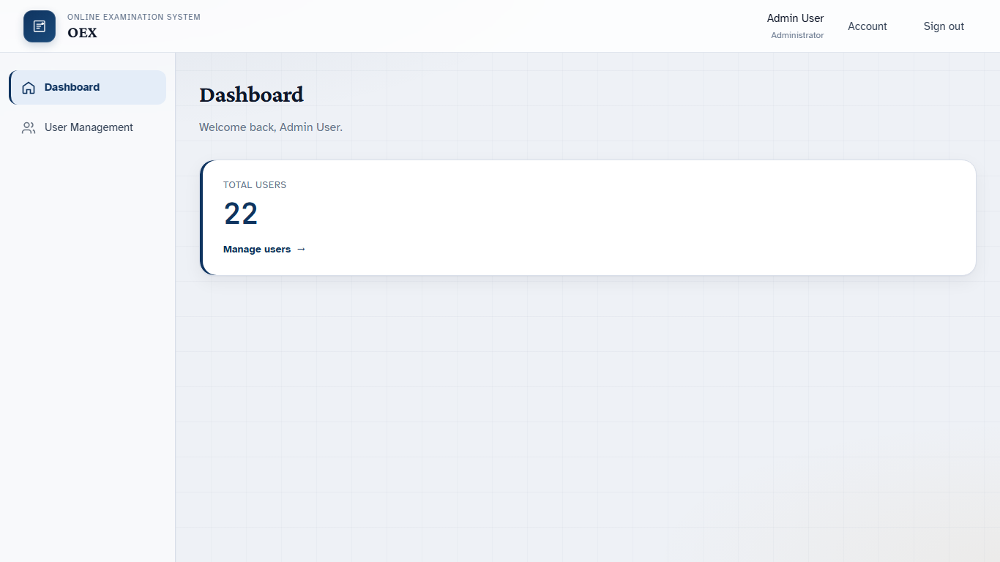
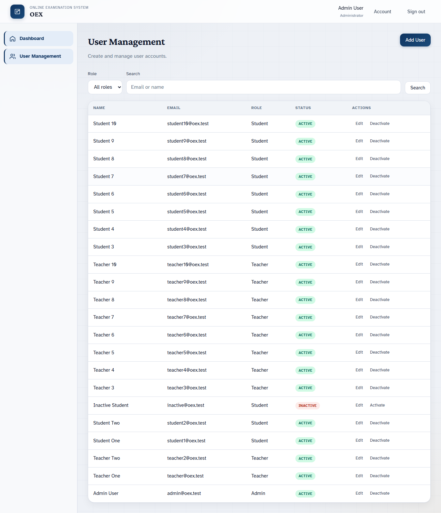
Admin xem tổng số user và CRUD tài khoản Teacher/Student.
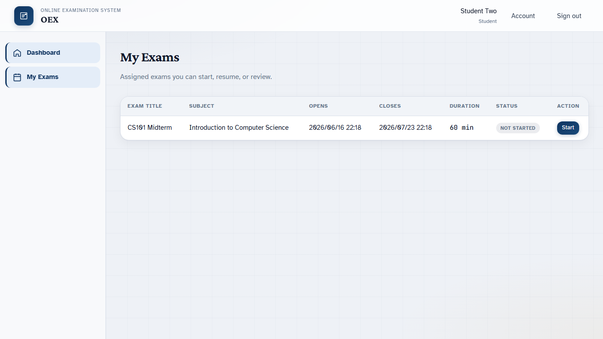
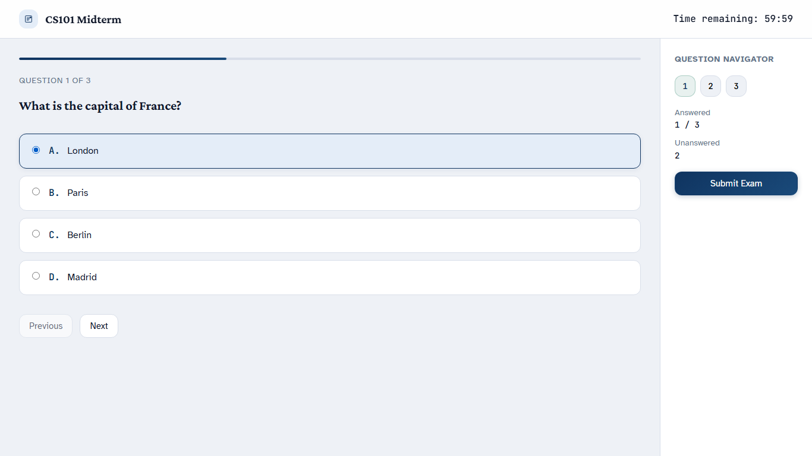
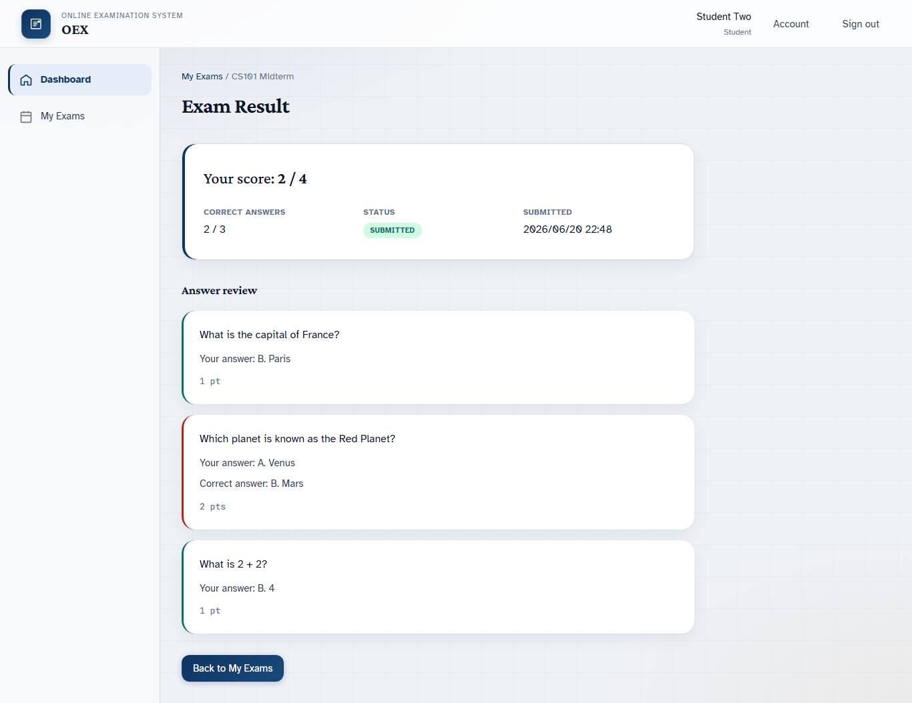
Học sinh Start đề PUBLISHED, làm bài với đồng hồ đếm ngược và thanh tiến độ; sau khi nộp xem điểm tổng và chi tiết từng câu.
Đặc điểm giao diện:
attemptService.ts)async function gradeAttemptInTx(tx, attempt) {
let score = 0;
let maxScore = 0;
for (const eq of attempt.assignment.exam.questions) {
const question = eq.question;
maxScore += Number(question.points);
const answer = attempt.answers.find((a) => a.questionId === question.id);
const correctOption = question.options.find((o) => o.isCorrect);
const isCorrect =
!!answer?.selectedOptionId &&
answer.selectedOptionId === correctOption?.id;
if (isCorrect) score += Number(question.points);
await tx.attemptAnswer.update({
where: { id: answer.id },
data: { isCorrect },
});
}
return { score, maxScore };
}
// routes/examRoutes.ts
router.use(authMiddleware, requireRole(Role.TEACHER));
Mọi handler exam chỉ chạy khi JWT hợp lệ và req.user.role === TEACHER.
router.beforeEach(async (to) => {
const auth = useAuthStore();
if (!auth.initialized) await auth.initialize();
if (to.meta.public) return true;
if (!auth.isAuthenticated) return { name: 'login', query: { redirect: to.fullPath } };
if (to.meta.roles && !to.meta.roles.includes(auth.user!.role))
return { name: 'dashboard' };
return true;
});
TakeExamView.vue)remainingSeconds tính từ expiresAt (server).setInterval 1s; khi <= 0 → submitAttempt().scheduleSave() debounce 500ms → saveAnswers().<dialog> xác nhận trước submit thủ công.Authorization: Bearer.auth.logout() + redirect login.| Loại | Công cụ | Phạm vi |
|---|---|---|
| Unit / Integration API | Vitest + Supertest | Toàn bộ REST endpoints |
| E2E smoke API | e2e-student-flow.test.ts |
Login → start → save → submit → result |
| Manual UI | docs/MANUAL_TEST_CHECKLIST.md |
40+ testcase giao diện |
| Build FE | vue-tsc + Vite build |
Type-check + bundle |
| File test | Số test | Module / API được kiểm tra |
|---|---|---|
auth.test.ts |
10 | Login, me, change-password, inactive user |
users.test.ts |
11 | CRUD user, role filter, deactivate |
subjects.test.ts |
9 | CRUD subject, ownership teacher |
questions.test.ts |
10 | CRUD MCQ, validate 1 correct option |
exams.test.ts |
19 | CRUD exam, questions, publish, assign, results |
attempts.test.ts |
17 | Start, save, submit, expire, hide answers |
students.test.ts |
3 | List students for assign |
e2e-student-flow.test.ts |
2 | Full student journey (smoke) |
| Tổng | 81 |
cd backend
cp .env.test.example .env.test
# DATABASE_URL trỏ database oex_test
npm run db:test:prepare # migrate + seed test data
# Toàn bộ API tests
cd backend
npm run test
# Kỳ vọng: 81 passed, exit code 0
# E2E smoke (luồng học sinh)
npm run test:e2e
# Build frontend (type-check)
cd ../frontend
npm run build
| API | Test case | Kỳ vọng |
|---|---|---|
POST /auth/login |
Đúng credentials | 200 + accessToken |
POST /auth/login |
Sai password | 401 INVALID_CREDENTIALS |
POST /users |
Admin tạo student | 201 |
POST /users |
Teacher gọi | 403 FORBIDDEN |
POST /questions |
2 options, 1 correct | 201 |
POST /questions |
0 correct | 400 VALIDATION_ERROR |
PATCH /exams/:id/status |
Publish | status PUBLISHED |
POST /attempts/start |
Ngoài khung giờ | 400 EXAM_NOT_AVAILABLE |
GET /attempts/:id |
IN_PROGRESS | options không có isCorrect |
POST /attempts/:id/submit |
Có đáp án đúng | score > 0, SUBMITTED |
POST /attempts/:id/submit |
Hết expiresAt | 400 ATTEMPT_EXPIRED |
| # | Bước | Kết quả mong đợi |
|---|---|---|
| 1 | Login teacher@oex.test |
Vào dashboard, thấy Subjects/Exams |
| 2 | Tạo câu hỏi mới | Hiển thị trong Question Bank |
| 3 | Publish exam + assign student2 | Student thấy trong My Exams |
| 4 | Student Start → Submit | Hiển thị điểm Result |
| 5 | Teacher Exam Results | Thấy attempt vừa nộp |
Checklist đầy đủ: docs/MANUAL_TEST_CHECKLIST.md.
Node.js 20+, Docker Desktop, Git, 4GB+ RAM.
git clone <repo-url>
cd PMHDV
docker compose up -d
cp backend/.env.example backend/.env
cd backend && npm install
npx prisma migrate deploy && npx prisma db seed
cd ../frontend && npm install
# Terminal 1
cd backend && npm run dev # http://localhost:5002/api/v1
# Terminal 2
cd frontend && npm run dev # http://localhost:5001
| Password | Role | |
|---|---|---|
admin@oex.test |
Password123! |
Admin |
teacher@oex.test |
Password123! |
Teacher |
student2@oex.test |
Password123! |
Student |
Production: docs/DEPLOY.md.
Đã hoàn thiện:
Hạn chế:
| Hạn chế | Ghi chú |
|---|---|
| Chưa Playwright UI E2E | Có API E2E + manual checklist |
| Không import Excel / media | Ngoài phạm vi v1 |
| Không module lớp | Gán trực tiếp học sinh |
| Chưa chống gian lận | Cần hạ tầng riêng |
| UI chỉ tiếng Anh | Có thể i18n |
Kết luận: Hệ thống đáp ứng mục tiêu môn học và tiêu chí báo cáo PMHDV; có tài liệu thiết kế, API spec, kiểm thử có thể tái lập.
| Ưu tiên | Tính năng |
|---|---|
| Cao | Module lớp học; import Excel câu hỏi |
| Trung bình | Xáo trộn câu/đáp án; câu hỏi hình ảnh; thống kê biểu đồ |
| Thấp | Playwright UI E2E; i18n Việt/Anh |
| Dài hạn | Microservices khi scale lớn |
docs/OEX_DetailedDesign_V2.md, docs/api/openapi.yaml, docs/DEPLOY.md, docs/MANUAL_TEST_CHECKLIST.mdmodel ExamAttempt {
id String @id @default(uuid())
assignmentId String @map("assignment_id")
expiresAt DateTime @map("expires_at")
score Decimal? @db.Decimal(7, 2)
status AttemptStatus
answers AttemptAnswer[]
}
const loginSchema = z.object({
email: z.string().email(),
password: z.string().min(1),
});
POST /api/v1/auth/login
{ "email": "student2@oex.test", "password": "Password123!" }
→ 200 { "success": true, "data": { "accessToken": "...", "user": { ... } } }
cd backend && npm run db:test:prepare && npm run test
cd frontend && npm run build
Báo cáo: Hồ Tiến Huy (K23DTCN138) — Lớp DTCXN02-K — Môn Phát triển phần mềm hướng dịch vụ — Đề tài OEX.